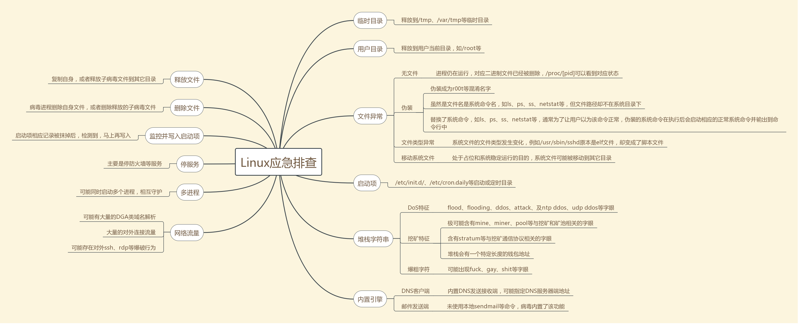

# 思路
# 应急响应定义
应急响应定义：组织为了应对突发 / 重大信息安全事件的发生所做的准备，以及在事件发生后所采取的措施。
应急响应目标：采取紧急措施和行动，恢复业务到正常状态；调查安全事件发生的原因，避免同类事件再次发生；在需要司法机关介入时，提供法律认可的数字证据。
# 应急响应阶段
从业务流程方式可以分为六个阶段：
- 准备：让我们严正以待，即在事件未发生时的准备工作，包括策略、计划、规范文档及具体的技术工具和平台，未雨绸膜
- 评估：对情况综合评估，初步判断是什么类型的问题，受影响的系统及严重程度
- 遏制：制止事态的扩大，限制攻击、破坏所波及的范围
- 根除：对事件发生的原因进行分析，彻底解决问题，避免再次在同一个问题上犯错
- 恢复：系统恢复常态
- 跟踪：针对事件的整改措施进行落实并监控是否有无异常，换句话叫安全运营中的持续改进，时刻保持危机感。
# 应急响应思路流程
# 收集信息
在赶往出事地点的路上以及还没有接触到具体业务时，要提前向客户询问清楚事件情况，如发现时间以及大致发生时间、事件造成的破坏、受害主机情况 (如系统、版本、内外网)、客户的具体处置要求
# 事件预定性
在初步了解情况后先做一个事件性质预判，判断下这个事件是个什么事件，是勒索还是挖矿还是其他事件。然后根据事件发生时间划定一个时间范围，重点排查这个时间段内的情况，从影响范围中确认一个排查范围。
# 取证分析
通过事件的初步定性取证，并且有选择的优先分析重点内容。
# 取证注意事项
保护
保证数据的安全性：制作磁盘映像 —— 不在原始磁盘上操作
保证数据完整性：取证中不使用可能破坏完整性的操作
第三方监督：所有操作都有第三方在场监督
提取
优先提取易消失的证据：内存信息、系统进程、网络连接信息、路由信息、临时文件、缓存等
文件系统：数据恢复、隐藏文件、加密文件、回收站、注册表、系统日志等
应用系统：系统日志、中间件日志
分析
证据在什么地方：日志、删除的文件、临时文件、缓存
从证据中能发现什么？如何关联证据？
# 定向分析
二次定性后，我们基本已经真正掌握了事件情况，这时就可以进行各种分析，对各种情况利用各种工具快速

# 实施思路
大致可以分为五个部分：

收集信息：收集客户信息和受害主机信息，如有病毒样本也收集
判断类型：判断是否是安全事件，何种安全事件，勒索、挖矿、断网、DoS 等等。
深入分析：日志分析、进程分析、启动项分析、样本分析。
清理处置：直接杀掉进程，删除文件，打补丁，抑或是修复文件。
产出报告：整理并输出完整的安全事件报告。
# 收集信息
# 受害情况
# 客户主机情况
| 客户名称 | 什么区域的什么客户 |
|---|---|
| 感染主机数 | 感染了多数台主机 |
| 补丁情况 | 打了哪些补丁，是否存在补丁漏打 |
| 中毒现象 | 勒索 / 挖矿 / DoS / 僵尸网络 / 后门 / 木马 |
| 帐号密码 | 确认是否有弱密码 |
| 对外开发端口 | 对外开发了哪些端口 |
| 开启的服务 | 开启了哪些服务 |
| 操作系统版本 | 操作系统版本信息 |
| 客户需求 | 确认客户具体需求 |

# 取证
取证并非毫无头绪的，病毒本身必然有网络行为，内存必然有其二进制代码，它要么是单独的进程模块，要么是进程的 dll/so 模块，通常，为了保活，它极可能还有自己的启动项、网络心跳包。
可以归结为如下 4 点要素：流量、内存、模块、启动项。
流量分析可以使用 Wireshark，主要分析下当前主机访问了哪些域名、URL、服务，或者有哪些外网 IP 在访问本地主机的哪些端口、服务和目录，又使用了何种协议等等。
# 可疑域名
如 asd333.2111.pw 这样的域名很明显是一个动态域名，极大可能就是一个恶意域名，有可能是 C2 服务器，
# 网络协议分析
IRC 协议在日常中很少使用，但常被用来建立僵尸网络，所以可以过滤筛选 IRC
# 外连
外连可以使用 TcpView 或者命令行下 netstat 命令排查
重点关注如下的外连和状态为 ESTABLISHED 的连接
chenyu-57068a53.localdomain.2674-> amsterdam.nl.eu.undernet.org.6667
TCP 127.0.0.1:8588 127.0.0.1:49856 ESTABLISHED 5004
# 实施具体操作
在简单做完定向分析并取证后，如果客户直接把系统重置了就不需要下一步了，如果客户要求从头到尾把系统排查一下那么就利用工具和手法进行排查。
对账户、进程、端口、服务、启动项、计划任务、文件、日志进行逐个检测，
# 日志
在取证那一步就做的工作，由于日志是最容易被删除或覆盖，所以一上去就要优先保存日志。
windows 下可疑打开事件管理器或者使用 EventLogExplorer、Logparse 等工具。
重要的事件日志 ID 如下：
| Event ID(2000/XP/2003) | Event ID(Vista/7/8/2008/2012) | 描述 | 日志名称 |
|---|---|---|---|
| 528 | 4624 | 成功登录 | Security |
| 529 | 4625 | 失败登录 | Security |
| 680 | 4776 | 成功 / 失败的账户认证 | Security |
| 624 | 4720 | 创建用户 | Security |
| 636 | 4732 | 添加用户到启用安全性的本地组中 | Security |
| 632 | 4728 | 添加用户到启用安全性的全局组中 | Security |
| 2934 | 7030 | 服务创建错误 | System |
| 2944 | 7040 | IPSEC 服务服务的启动类型已从禁用更改为自动启动 | System |
| 2949 | 7045 | 服务创建 | System |
# 账户
PChunter、D 盾

# 端口
注意以下状态的网络连接：ESTABLISHED：连接建立数据传输。LISTEN：监听中等待连接
Tcpview、火绒剑、命令行下 netstat -ano：

DNSQuerySniffer：DNS 解析查询工具。可以通过此工具确定访问恶意域名的端口号，该工具还可以将主机访问过的所有域名记录下来。

# 进程
主要注意点大致就是：没有厂商名字、没有签名验证信息、没有描述信息的可疑进程。还有典型的挖矿现象 (CPU 或内存资源占用长时间过高) 的进程。
Pchunter：黑色为微软官方进程，蓝色为外界安装软件进程，红色为可疑进程，同时注意进程参数。
Process Explorer，进程浏览器。界面功能从左到右为：Process 进程、CPU 占比、Private Bytes 提交大小、Working Set (工作设置、内存)、PID、Description 描述、Company Name 公司名。
小技巧：被注入的进程属性里会多出 **.NET Assemblies 和.NET Performance** 两个菜单

# 启动项、计划任务、服务
autoruns: 检查启动项、计划任务、服务最推荐的工具。autoruns 可以看到启动项的可执行文件路径和启动命令。


WMI 后门：无文件，相对来说难以排查，但也可以使用 autoruns 排查。

# 文件
# 程序运行记录
使用 WinPrefetchView 解析 Prefetch 文件夹中的.pf 文件取证。

# 可疑文件
可疑文件的排查可疑根据预判时确定的时间范围和影响范围来缩小排查范围。
筛选要排查的时间范围内的文件，尤其是创建时间、修改时间在此时间范围内的文件以及临时文件、快捷方式
# Rootkit 病毒查杀
火绒恶性木马专杀工具 hrkill, 单独下载运行。
官网：http://bbs.huorong.cn/thread-18575-1-1.html
或腾讯管家工具箱内下载 "系统急救箱" 运行扫描，过程中点击会重启两三次。
也可以选择 360 顽固病毒查杀。
# 清理与加固
漏洞和补丁，在应急响应中是不可或缺。如果黑客是通过某种漏洞入侵系统的，而在应急响应中，无法找出黑客所利用的漏洞，就会意味着，入侵行为可以反复发生。在终端侧，就会表现为病毒清理不干净，杀了又来，所以一定要找出漏洞。
找到漏洞后，就需要打上相应的补丁，这样才是一次完整的处置。
怎么查看系统补丁情况？以 Windows 为例，直接打开 cmd，输入命令 systeminfo 即可获取。